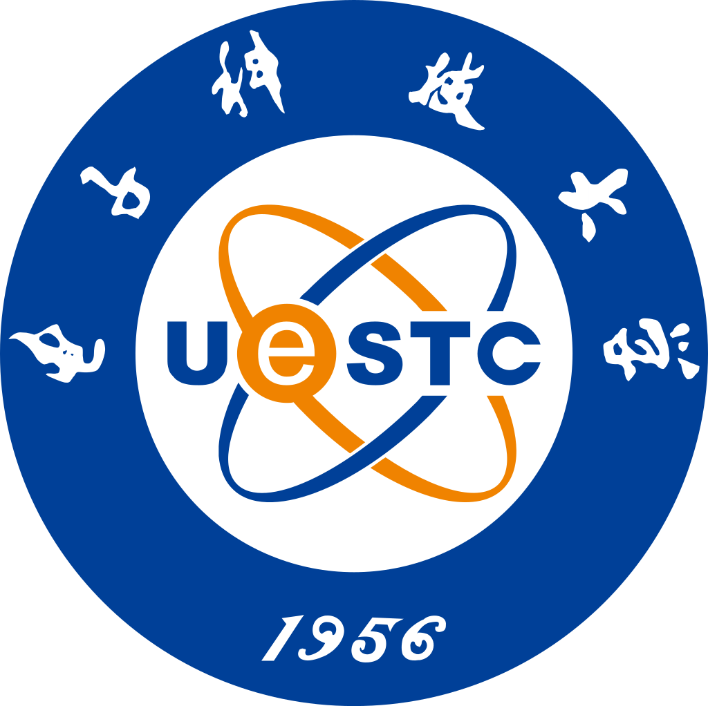

Scheduling and optimization for multi-agent, distributed computing network.

Yong Yu
Ph.D. Student in Network Engineering · Integrated Sensing-Communication-Computing
I am a direct Ph.D. student at Peking University, advised by Jianan Zhang. My research focuses on integrated sensing-communication-computation, intelligent connected vehicles, and resource allocation for future wireless systems.
Email: yuyong_uestc@163.com
Beijing, China
Research Topics
Optimization and efficiency improvement for large language model inference.
News
- [2025] SynthSoM was published in Scientific Data.
- [2024] Started Ph.D. study at Peking University, School of Electronics.
- [2024] Received the Peking University Presidential Scholarship.
Education
Peking University
Ph.D. in Network Engineering, School of Electronics.
- Advisor Jianan Zhang
- Focus Integrated sensing-communication-computation and intelligent connected systems.

University of Electronic Science and Technology of China
B.E. in Network Engineering, School of Information and Communication Engineering.
- Degree Bachelor of Engineering.
- GPA 3.99
- Rank 3/74
Publications
Experience
2023.07 - 2023.10
CETC No. 54 Research Institute
Software development intern working on system development and engineering tasks.
Projects
GNSS acquisition algorithm research
Studied acquisition methods and simulation workflows for satellite navigation signals.
UAV sweep-flight error assessment
Analyzed trajectory and positioning errors in UAV flight scenarios.
Multi-satellite positioning simulation
Built simulation support for multi-satellite positioning and performance evaluation.
Multi-agent cooperative target allocation
Worked on coordinated assignment and resource allocation across multiple agents.
Awards
- 2024 Peking University Presidential Scholarship, 2024 - 2025.
- 2024 Outstanding Graduate of UESTC.
- 2024 Merit Student of Sichuan Province.
- 2023 National Scholarship.
Contact
I welcome discussions on integrated sensing and communication, intelligent connected systems, and collaborative research opportunities.
Email: yuyong_uestc@163.com